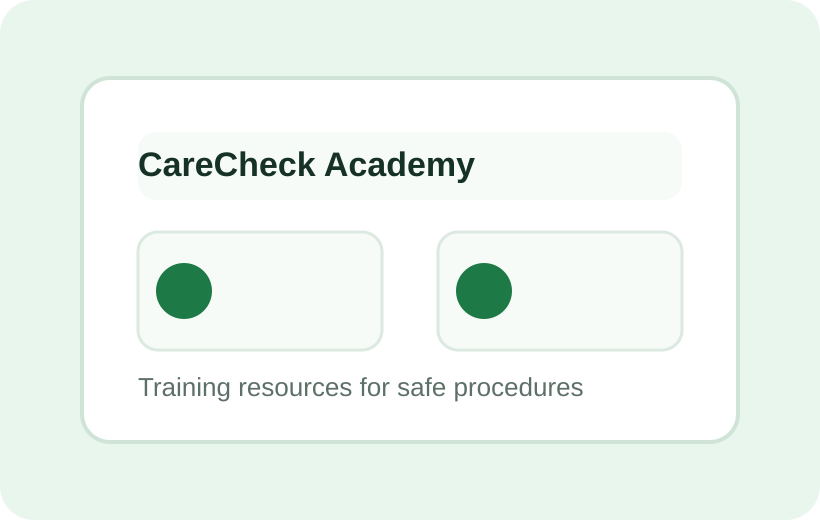

CareCheck Academy
Training resources for safer, more consistent procedures.
Staff training resources for health, safety, compliance, and procedures, built to support real childcare center workflows.

Practical training support
Academy resources are designed to reinforce policies, help new staff learn center expectations, and keep recurring safety procedures fresh.
Resource topics
- Health and safety routines
- Classroom procedure refreshers
- Medication and first-aid readiness
- Licensing and compliance preparation